Pedal is a service designed for bicycle commuters. Find the best routes to
work or school based on safety and speed. Pedal is an organization that sells products to help improve safety and communication between bicyclists and
motor vehicles who share the road. Pedal exists on the web, as an app and
within your city's infrastructure.
Find the best routes and the best lockup areas.
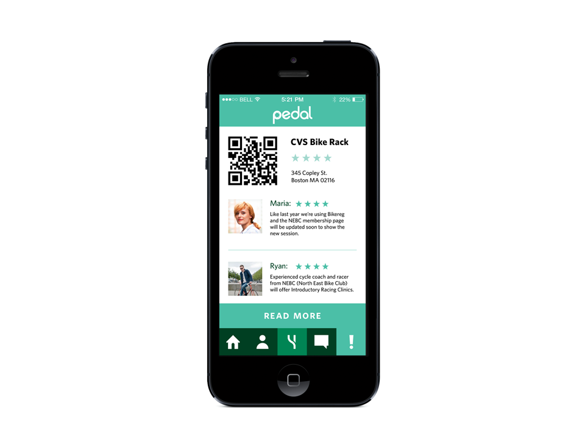 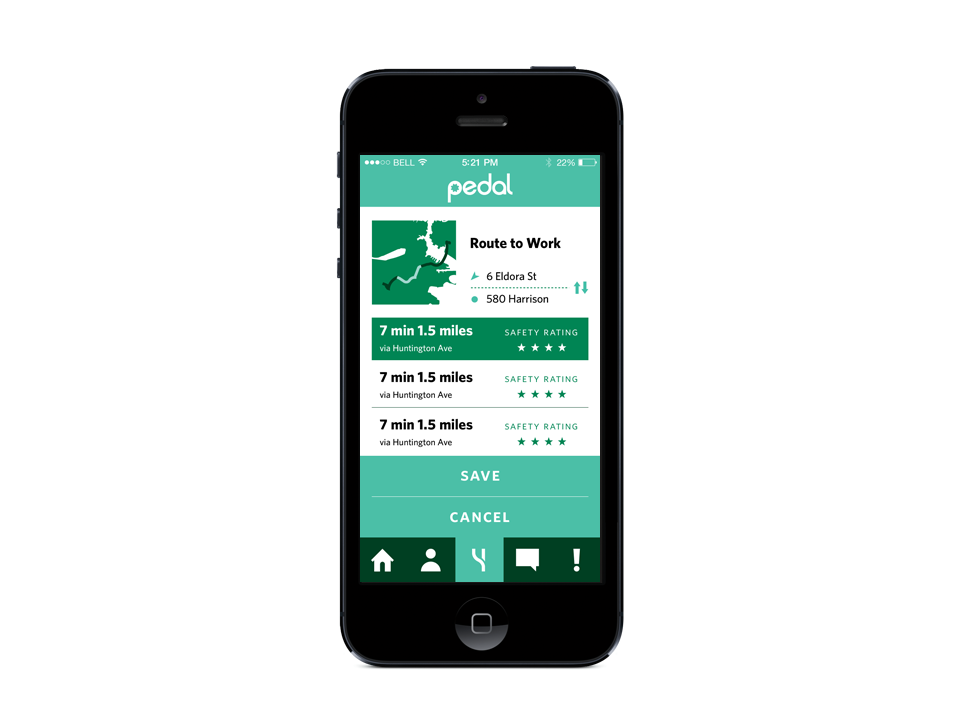We built a tracker that fits in your frame. If your bike gets lost or stolen, the Pedal app well tell you where your bike is.
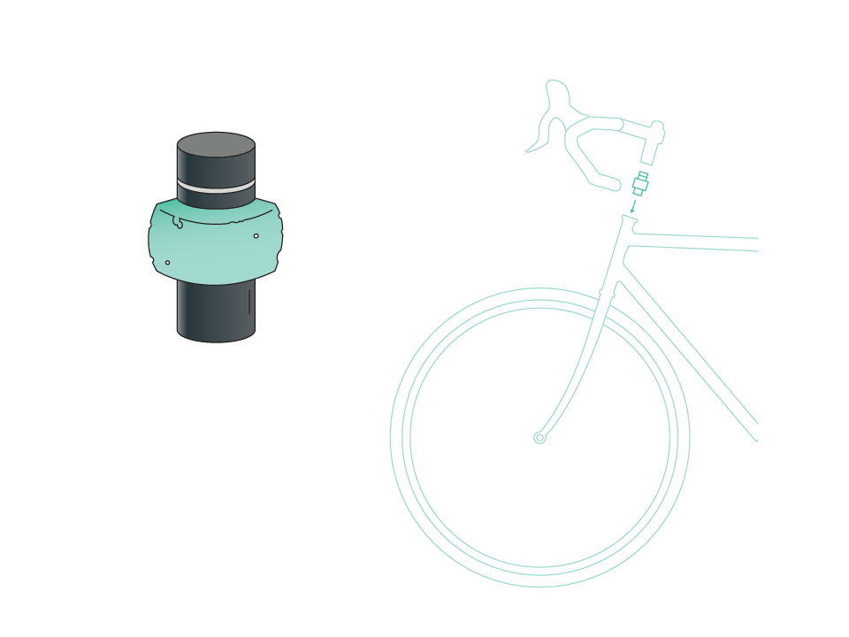Popular bike lanes have motion sensor lights. By picking up a certain level of speed, these lights make bicyclists more visible to motor vehicle drivers.
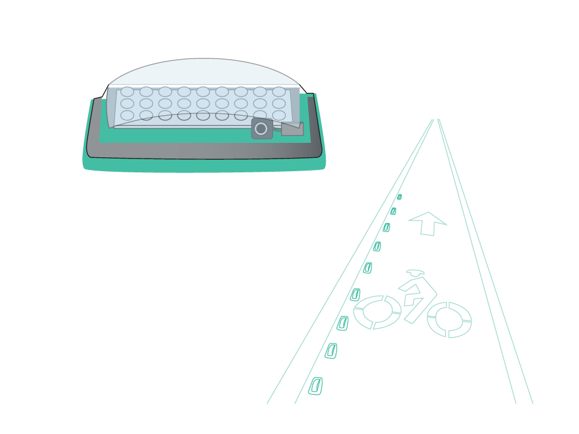Learn together with a community of bicyclists in your area.
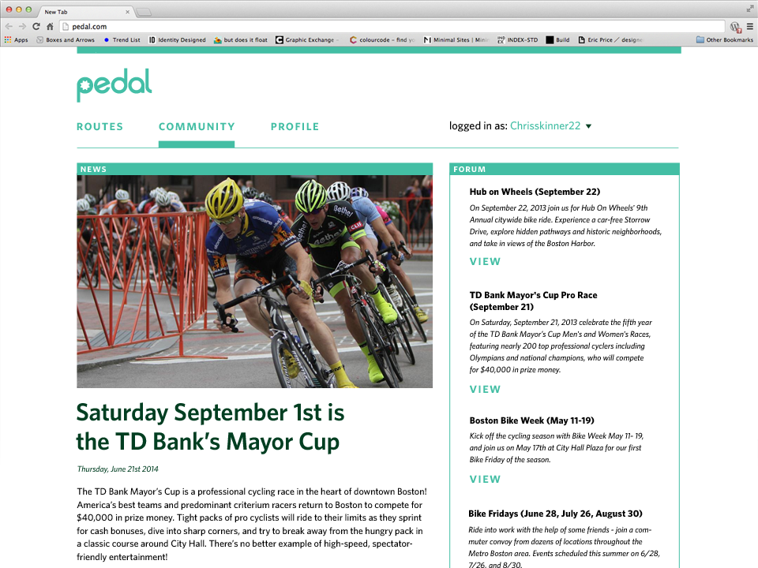 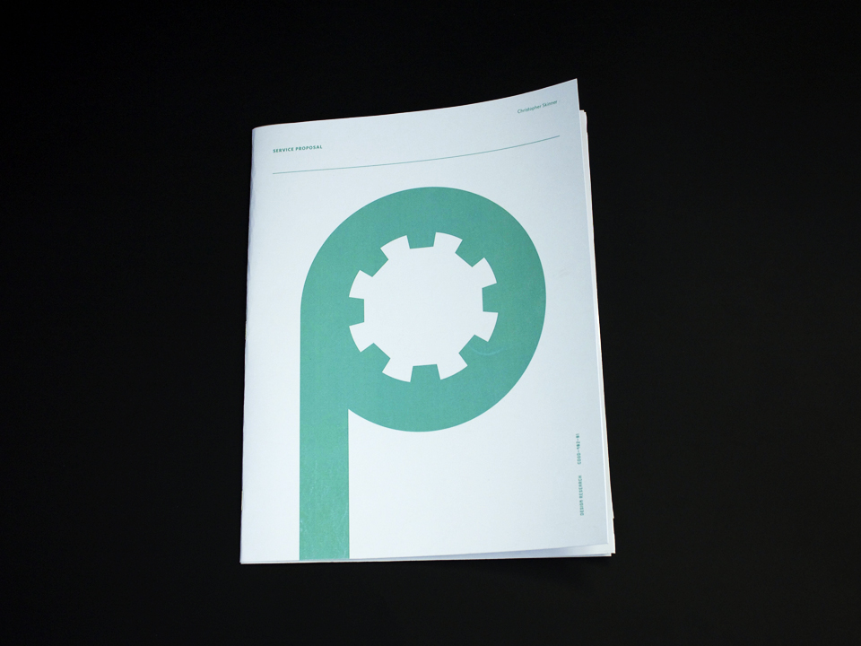 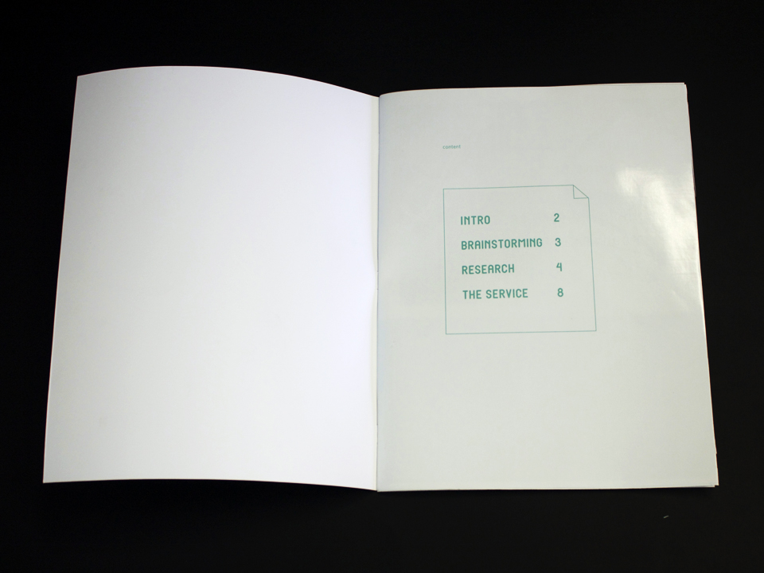 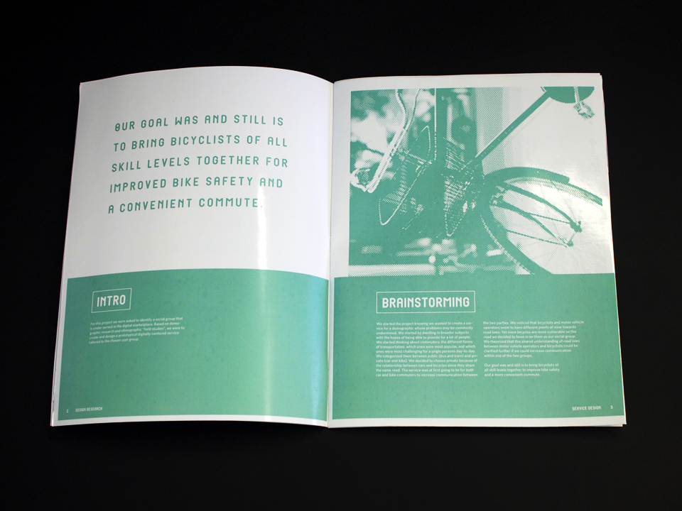 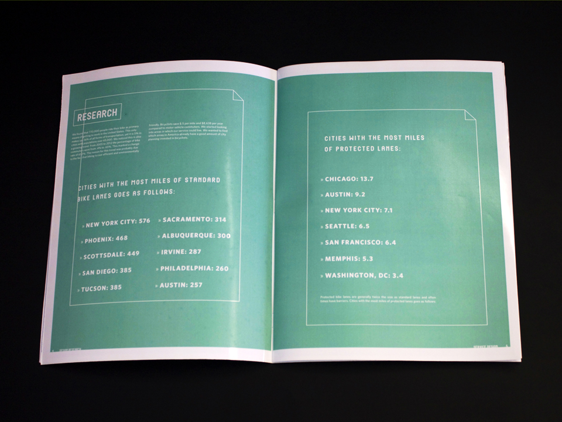 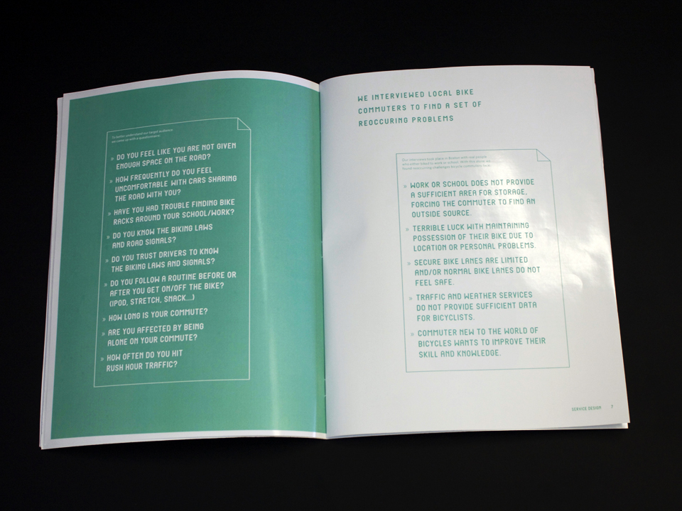 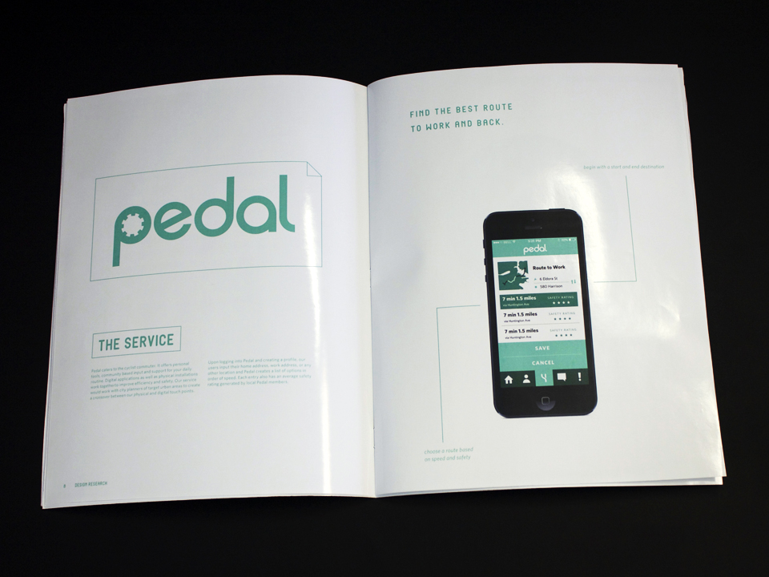